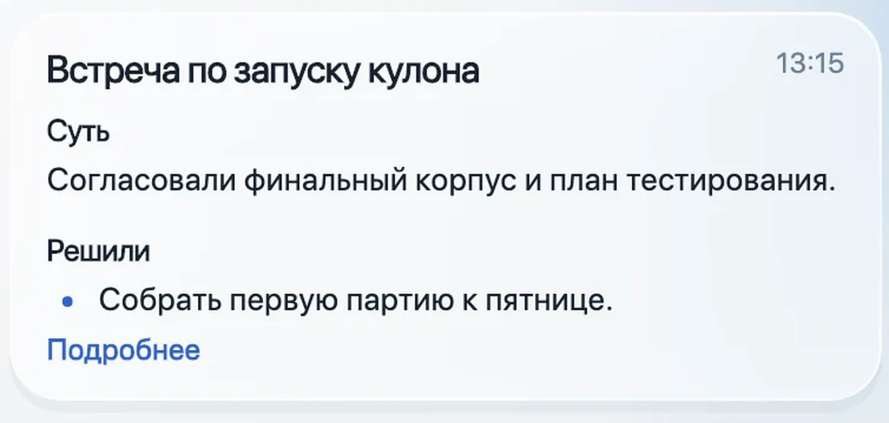
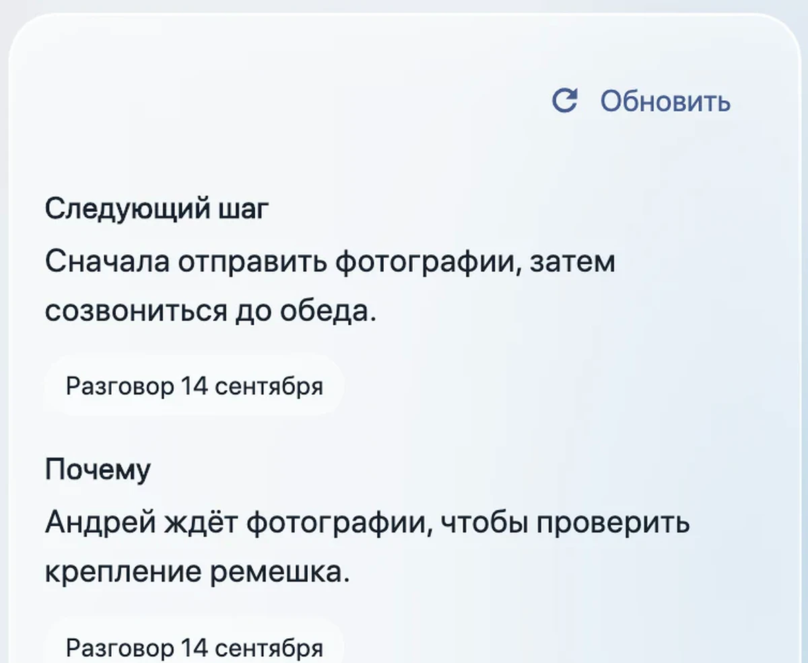
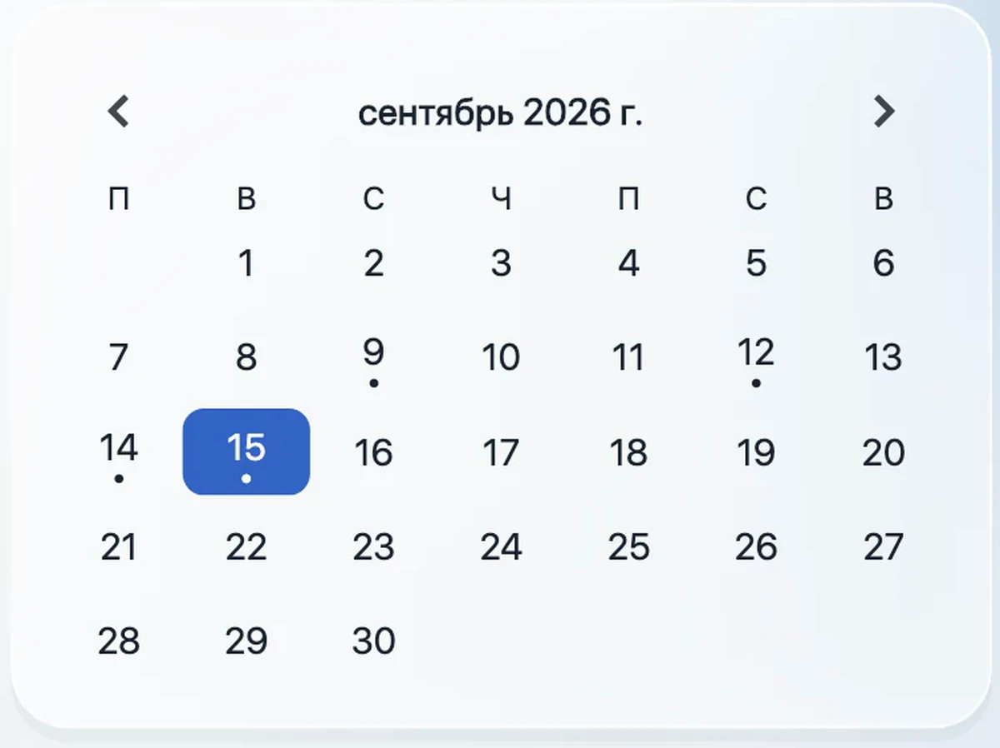
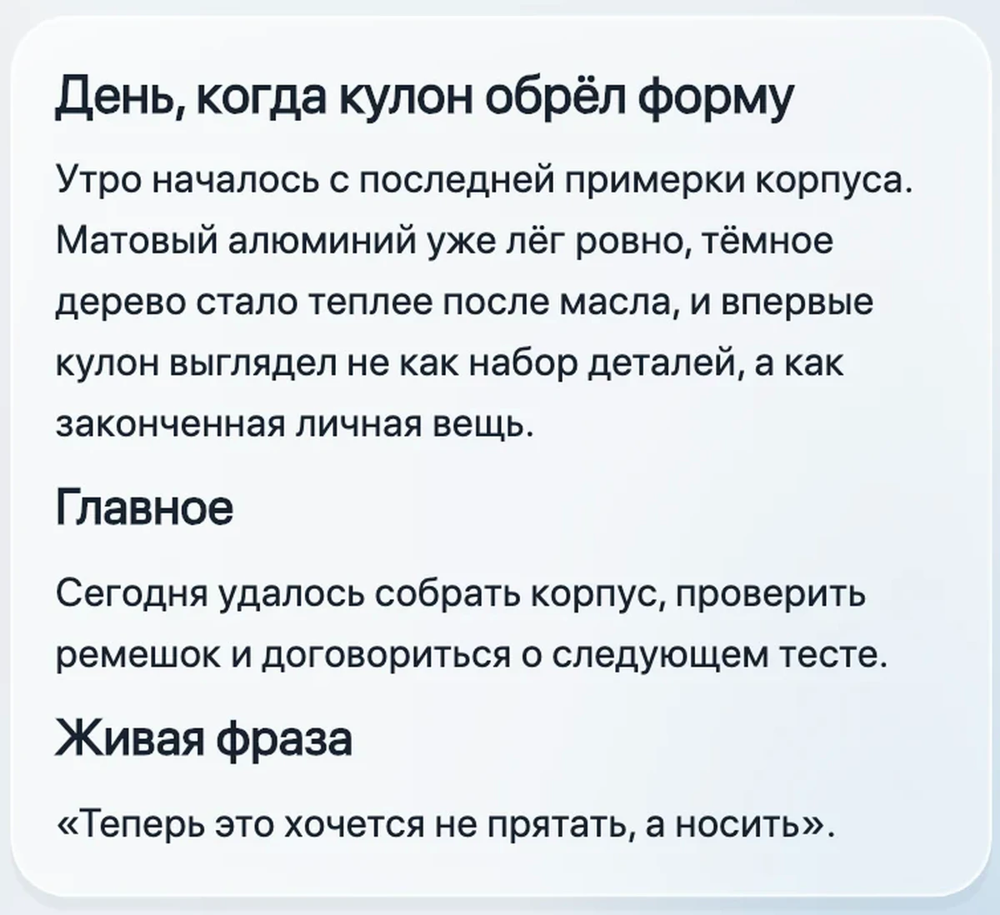
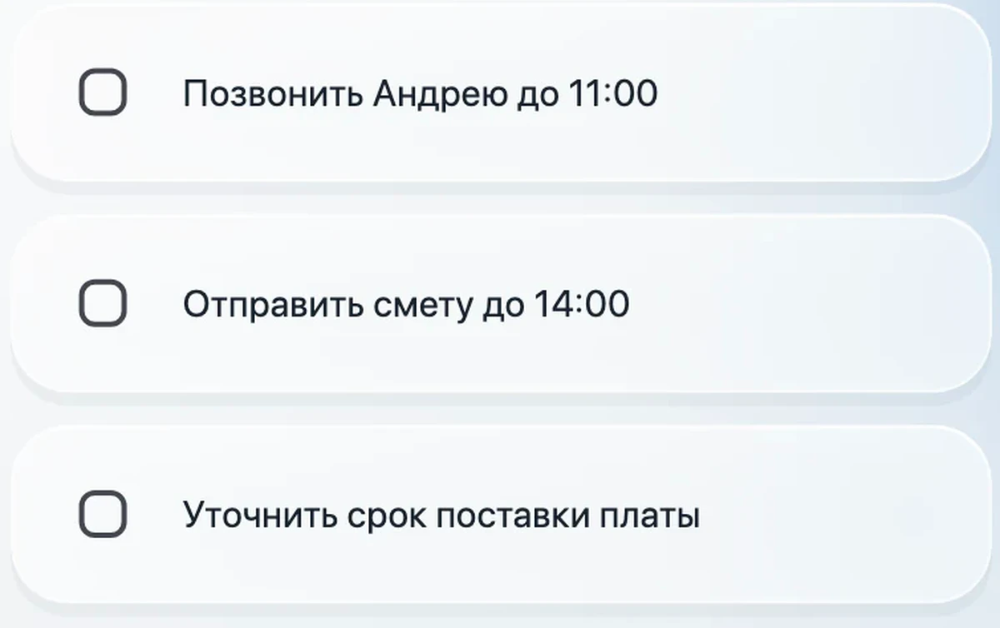
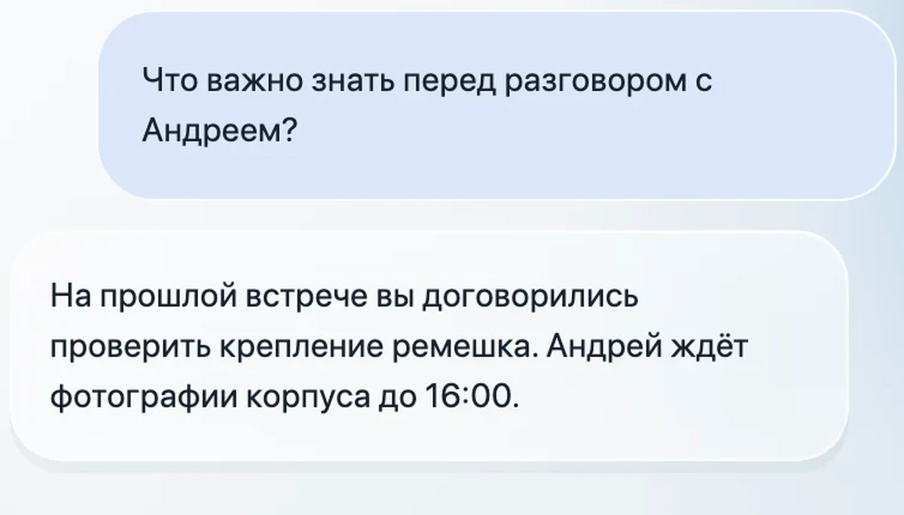

Готовый итог встречи
Коротко: что обсудили, что решили, какие суммы и сроки назвали.
Голосовой помощник и личная память
Записывает разговоры с телефона или кулона. Для работы — делает итоги, собирает дела и напоминает о сроках. Для жизни — сохраняет личную летопись, которую можно читать и слушать.

Что вы получаете
Коротко: что обсудили, что решили, какие суммы и сроки назвали.
Помнит, что обещали вы и что обещали вам. Показывает это как понятные дела.
Рабочие договорённости становятся делами, а личные разговоры — историей жизни.
Два пространства
Помнит по-разному обращается с деловой и личной частью дня. Рабочий разговор превращается в результат. Личный — в историю, которую можно читать и слушать.


Принцип внедрения: компания получает только рабочую информацию, которую ей разрешили видеть. Личная часть памяти сотрудника остаётся личной.
События, мысли, встречи и живые фразы собираются в рассказ о прожитом дне.
Помнит, кто эти люди, что вас связывает и как менялись ваши отношения со временем.
Страницы летописи можно слушать как главы книги — голосом рассказчика, которого выберет владелец.


Стиль тоже выбираете вы: короткий дневник, строгие мемуары, ироничная проза или собственная манера рассказа.
Один день с Помнит
Показывает, что нужно сделать сегодня и кому пора напомнить об обещании.

Даёт короткий итог: решения, суммы, сроки и следующие шаги.
Напоминает, о чём вы говорили раньше и какие вопросы остались открытыми.

Собирает прожитый день в короткую историю, которую приятно сохранить и перечитать.
Для кого
Руководителям, предпринимателям, специалистам и командам — чтобы не терять договорённости. И каждому человеку — чтобы не терять собственную историю.
Я обещал ему скидку или нет?
Помнит покажет точную фразу и дату разговора. Не нужно искать по заметкам и надеяться на память.
Как это работает
Включаете запись на телефоне или носите кулон.
Помнит делает короткий конспект и список дел.
Разговоры связываются с людьми, решениями и обещаниями.
Получаете короткий ответ по прошлым разговорам.
Для ответа используются только относящиеся к вопросу разговоры — не весь личный архив.
Приложение
Короткие итоги всех разговоров по порядку.
Ваши обещания, чужие обещания и ближайшие сроки.
Любой вопрос к своей памяти обычными словами.
Дни вашей жизни как история, которую можно читать и слушать.
Кулон
Небольшой кулон записывает разговоры в течение дня. Вы занимаетесь своими делами, а важные слова не теряются.
Можно пользоваться только приложением. Кулон нужен тем, кто хочет сохранять больше разговоров без постоянного участия телефона.
Образ продукта
Выберите ремешок, породу дерева и гравировку — чтобы кулон выглядел как ваша вещь, а не безликий гаджет.


Один помощник внутри — разный внешний вид для каждого владельца.
Настраивается под вас
Короткий дневник, строгие мемуары или лёгкий рассказ — как вам приятнее читать.
Передавать записи сразу, раз в час или только по вашей команде.
Вы сами выбираете слово, на которое будет откликаться ваш помощник.
Настройте срок хранения и то, какую информацию Помнит может использовать.
Главный принцип
Не весь архив сразу. Для ответа берутся только нужные разговоры.
Ответ можно проверить. Помнит показывает исходный разговор и дату.
Вы управляете памятью. Сами выбираете, что хранить и когда удалять.
Помнит